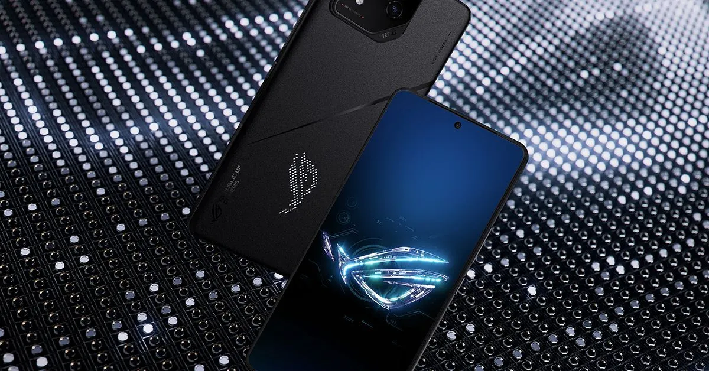
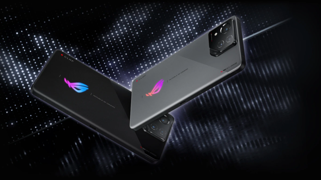

ASUS lança ROG Phone 8, nova linha de celulares gamers
postado 07/05/2024 às 19:01 Nesta terça-feira (7) a ASUS anunciou seu novo produto focado no público gamer, a linha de celulares ROG Phone 8. Os aparelhos são equipados com dispositivos preparados para suportar muitas horas de jogos, como um sistema de resfriamento e duas portas USB-C, permitindo o carregamento durante as partidas. De acordo com a marca, os smartphones da linha Republic of Gamer (ROG) foram projetados para jogadores de alto desempenho. Em destaque nos lançamentos fica as duas câmeras traseiras e o painel de LED na parte traseira do celular, que pode exibir animações customizadas.
Leia maisO Smartphone projetado para jogadores
postado 07/05/2024 às 19:01 Usando inteligência artificial, o Modo Segundo Plano permite que o usuário faça outras atividades
enquanto o ROG 8 joga sozinho, por meio de comandos pré-programados. Além disso, ele vem equipado
com o X-Sense, sistema que adiciona recursos como aceleração da fala dos personagens e coleta
automática de itens durante as partidas.
No que diz respeito às câmeras, a parte traseira vem com uma lente teleobjetiva de 32MP que, de
acordo com a empresa, permite um zoom de até 30x, e outra ultrawide (grande angular) de 13 MP. A
frontal tem 32MP com um campo de visão de 90°
A tela de Mini-LED localizada na parte traseira do aparelho está nas versões ROG Phone 8 Pro e ROG
Phone 8 Pro Edition e é personalizável, permitindo a exibição de animações feitas pelo usuário.
Os ROG Phone 8 Pro e Pro Edition chegam nesta terça-feira (7) na loja da ASUS com preços a partir de
R$ 9.999.
Postagens recentes
Final Fantasy 7 Rebirth é uma experiência completa que faz jus à franquia mais clássica dos RPGs nos videogames. O jogo é tudo que os fãs da longeva da série desejavam, mas não recebiam há muito tempo...
Leia maisA iRobot desenvolveu uma nova dupla de robôs residenciais, o Braava Jet M6 e o Roomba S9+, que podem trabalhar juntos para limpar os pisos e aspirar a poeira da sua casa. A interação é possível graças a um aplicativo da iRobot...
Leia mais